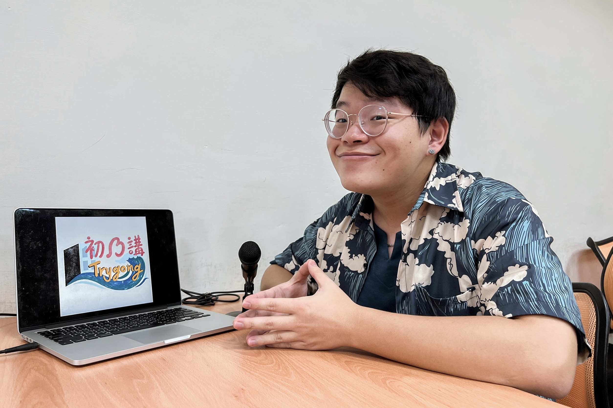
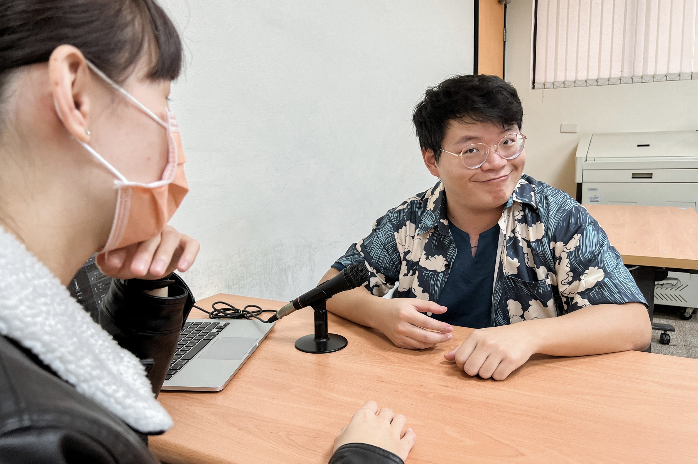
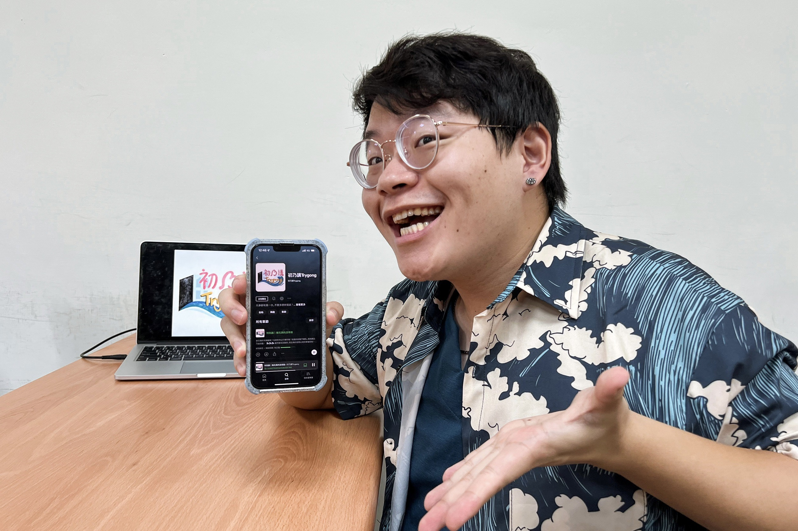
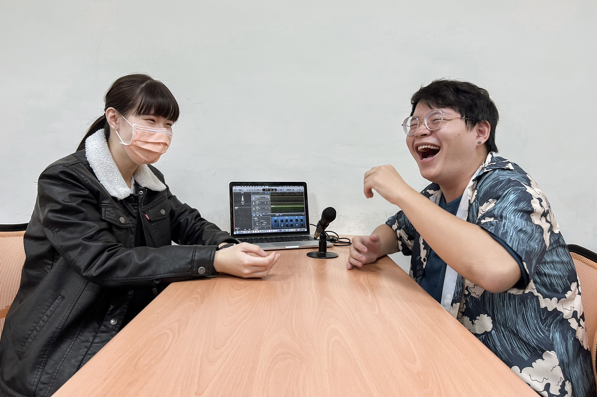
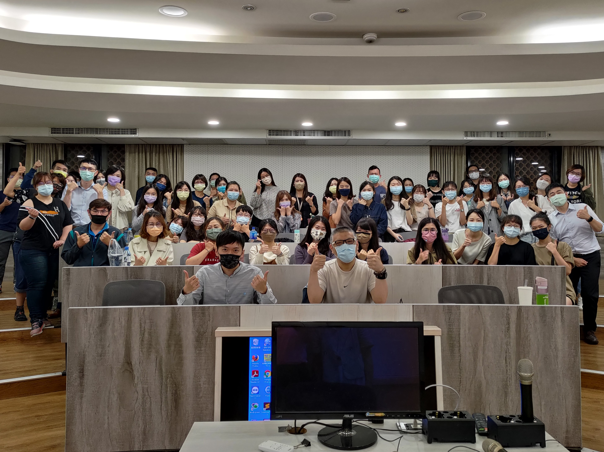
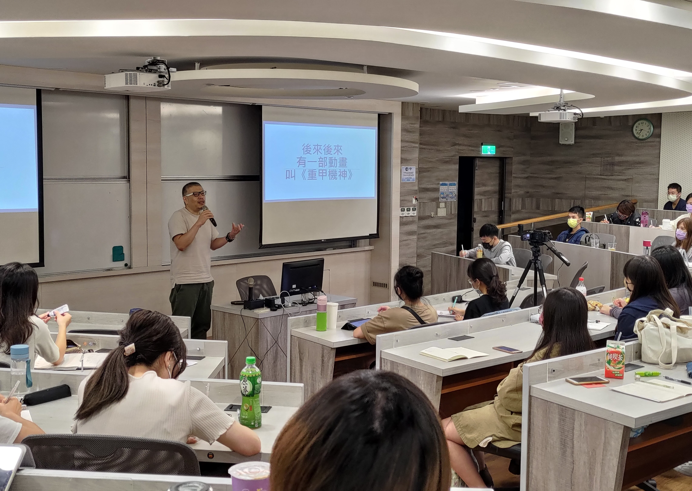
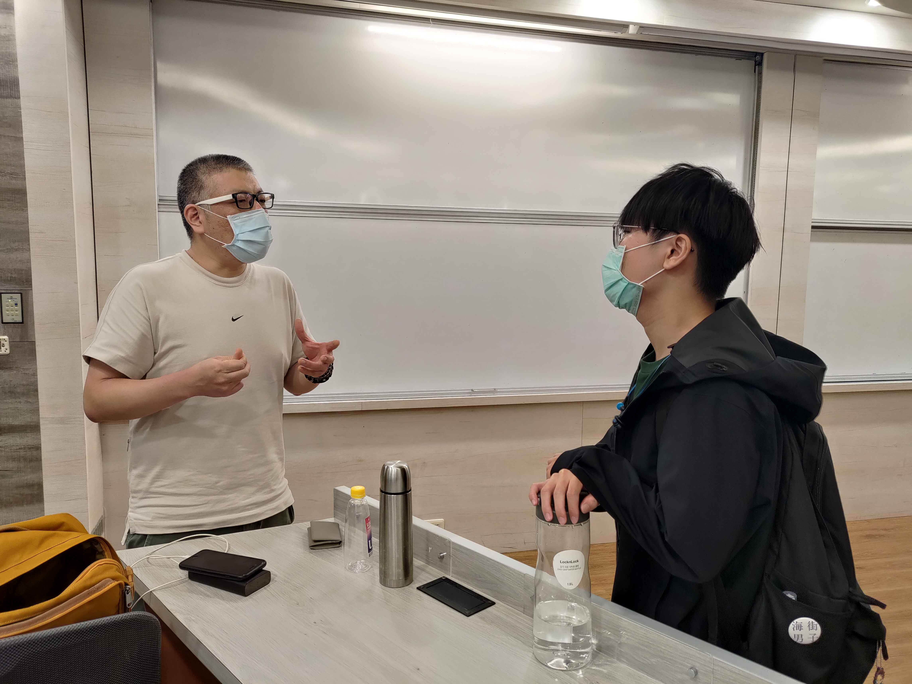
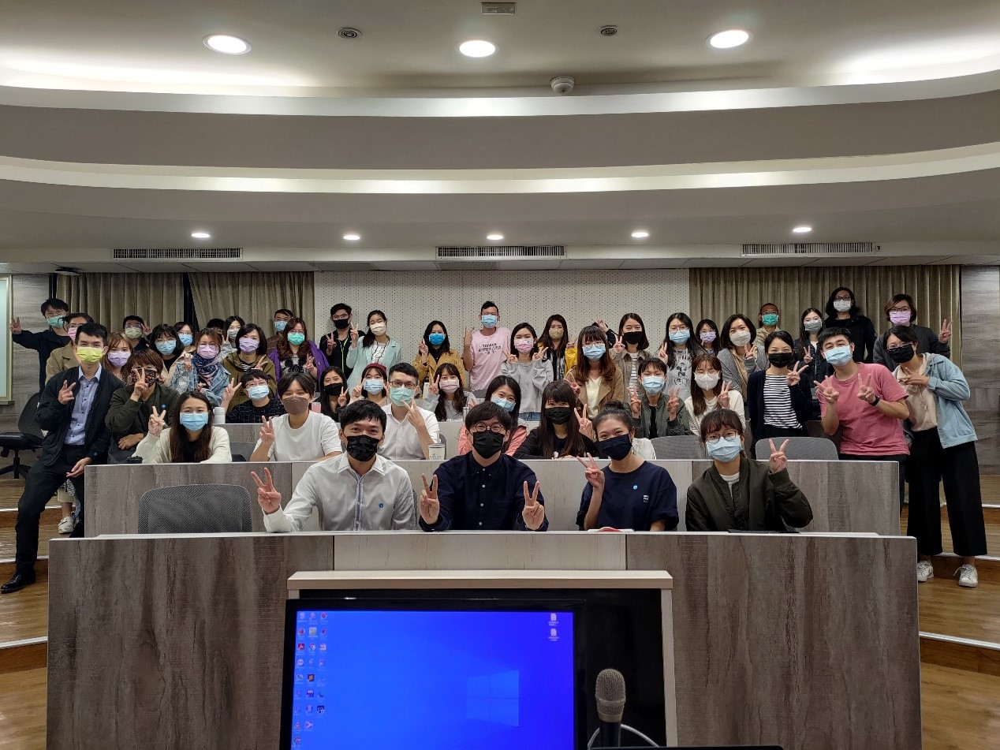
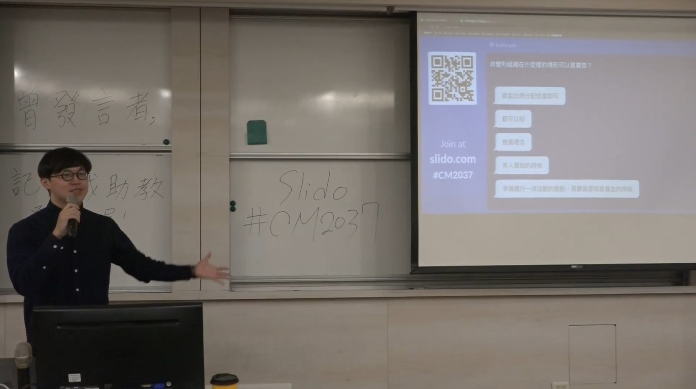
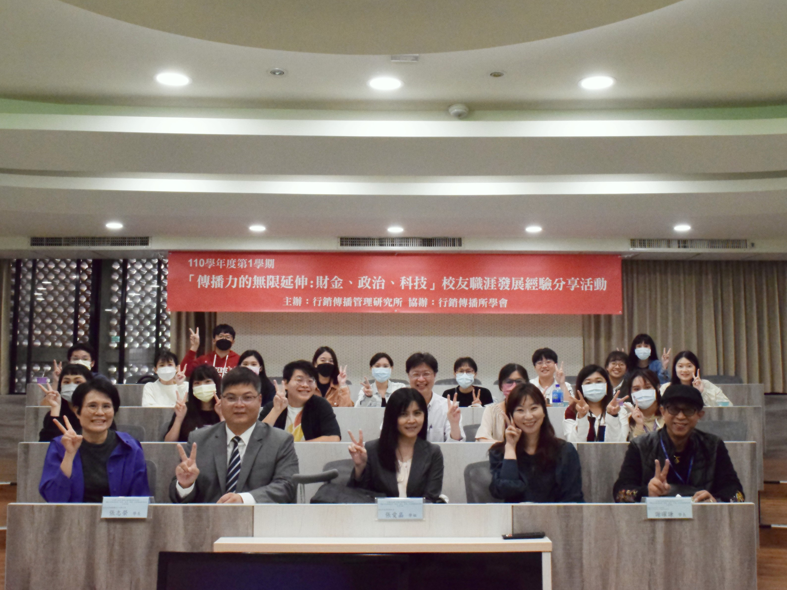

錄製研究「聲」活 紀錄內心獨白
有別於電台廣播，採預錄形式且不必即時收聽的Podcast，是近年人們通勤、閒暇之餘，用來填補零碎時間的好夥伴。今年七月，首次以行傳所為主題，第一集就邀請所上三位研究生，來與聽眾分享碩士生活的《初乃講Trygong》（以下簡稱初乃講），在節目草創初期即獲得Firstory推薦。因此，本期電子報封面人物邀請到初乃講的主持人，同時也是行傳所110級所學會會長的柯乃瑜，來與大家分享新手製作Podcast的挑戰之路。

源自日常的創作靈感 描摹生活的聲音串連
一支標配不到千元的麥克風，外加一台電腦，Podcast之路從此開始。過去就讀中文系的乃瑜，喜歡收集源自生活的題材，這讓他擁有綿延不絕的創作靈感。隨著日常想法的積累，乃瑜開始有了創作的欲望。在就讀行傳所後，為體現整合行銷傳播之所學，乃瑜決定把過去的靈感轉化為行動，希望透過聲音創作將自身於行傳所的體會分享給大家，像是初乃講的最新一集「推坑真的沒拿錢」，就邀請行傳所招說會網路組的同學來與聽眾分享甄試與筆試的歷程。在這個自媒體的時代，乃瑜認為要完整的將他人想法傳遞給大眾並不容易，於是他選擇具有社會臨場感的聲音廣播作為媒介，也因為聲音相較於文字更能使來賓富有立體感，並以直接口語化的符號傳遞訊息，所以Podcast市場漸漸成為許多人投身音頻創作的入門管道。

錄音器材不能少 收音品質不可失
身為一名毫無音訊創作經驗的菜鳥Podcaster，投身Podcast市場的初期也遭遇到許多困難。受限於製作經費的不足，初乃講的首集，乃瑜只帶著一支麥克風便前去訪談三位同學，而這也造成當集出現嚴重的收音問題。因為一支麥克風只會產生一軌音檔，所以當來賓們同時說話時，後製若僅有一軌音檔便無法分割處理每個來賓的聲音，導致輸出後的來賓音量忽大忽小。因此，乃瑜提醒準備入門Podcast的新手，在訪談前的器材準備上，能夠至少配備一支以上的麥克風給來賓，並預先進行收音測試，以確保後製時有多個音軌可以調整剪輯，也唯有確保聲音輸出穩定，才能給聽眾帶來有品質的Podcast節目。

編輯出精彩人生 訪談心得大公開
正視困難，才能解決困難。乃瑜坦言Podcast的剪輯不只是段落的調整，也是在對自己要求的事物進行重複檢視及修正。作為所學會會長的乃瑜，經常需要主持所上活動，所以他對於主持很有要求。然而在剪輯節目的過程，重複收聽音檔讓他意識到說話時無意間的冗言贅字，故編輯工作讓乃瑜獲得了提升主持口條的機會。同時，訪談經驗也強化了乃瑜的主持技巧，他指出主持人需依據來賓的個性去調整自己的訪談方式，像是訪談話少的人，就需要從他的專業著手，去刺激對方說話的慾望。此外，在引導對方說話時，需要注意是否過於將話語權集中在自己身上，以避免來賓開口機會較少，形成一言堂的窘境，因此如何平衡雙方的話語權重，是每位創作者都需要去思考的問題。


【行傳講座】
行銷觀點下的影視產業發展 尋找本土影視自我認同
近幾年，透過網路向使用者提供各項應用服務的OTT（Over The
Top）發展迅速，其中串流媒體服務如Netflix令國外熱門影視輸入台灣更加方便，也使得國內本就不夠成熟的影視產業面臨考驗。為瞭解台灣文化與影視產業的連結性，行銷傳播管理研究所偕同慶聯有線電視股份有限公司、港都有線電視股份有限公司，於11月5日邀請牽猴子股份有限公司總經理王師，以「新時代台灣影視的類型想像與IP建構」為題，探討台灣影視產業的現況以及未來的發展方向。

瞭解觀眾的影視需求 改變產業運行模式
一部電影雖然是創作者懷抱理想的心血結晶，但回到現實層面，電影仍然是歷經長時間製作且需要動用龐大人力與金錢的產業，如今媒體環境與科技應用都比過去來得更加多元，影視作品本身是否吸引觀眾、具有商業價值，成為了奠定行銷成功的基礎。而新時代的影視行銷，即是將行銷領域的概念帶入製作前期，引領製作團隊更加理解觀眾與市場，拍攝具有商業價值而非孤芳自賞的作品。

借鑑韓國影視產業 從歷史中建立文化觀點
何謂具有台灣特色的影視作品呢？借鑒近年不斷生產出色電影與電視劇的韓國，他們曾喊出「文化立國」的口號，既透過電影批判韓國社會的陰暗與苦境，也能在電視劇中營造觀眾嚮往的浪漫愛情氛圍，因此韓國藉由影視作品建立出屬於自己的文化。回顧台灣電影史上位居票房高位的《海角七號》，隱藏在故事一隅，日籍教師與小島友子橫跨六十年歲月的情意，喚起許多長輩的昔日記憶，也是台灣人民獨有的歷史文化。王師總經理表示，從台灣歷史中找尋合適的故事題材加以轉化成劇本，並運用符合商業敘事的拍攝手法，將是台灣影視產業可以努力的方向。
掌握類型商業語言 積累優質影視作品
進一步探討影視作品的類型，比如愛情、喜劇、驚悚等，可以發現「類型」是經由演算法建議或名人、親朋好友推薦，又或者是OTT平台所建立的分類系統，將無法描繪的觀眾喜好轉化為一種可被感知的商業語言，觀眾接收並以此標準去評判作品內容，且希望作品內容能符合自己對該類型作品的期待。當然，OTT平台的出現也代表觀影形式的轉變，觀眾觀影不再受限於戲院空間與電視節目表，故創作者與行銷人勢必要重新思考影視作品所欲向觀眾傳達的核心意義。台灣現今的影視產業仍不夠成熟，尚未發展出一套製作影視作品的工業體系，在產量不足、資源有限的情況下，掌握觀眾喜好並製作，是積累優質影視作品的第一步。

【行傳講座】
非營利組織的行銷方式 建立大眾與議題橋梁
非營利組織的公益事業形象讓其在尋求社會支持或募集資金時，更容易受到社會大眾檢視。為了跳脫純服務型態的框架，行銷傳播管理研究所偕同慶聯有線電視股份有限公司、港都有線電視股份有限公司，於11月12日邀請非營利網路媒體《報導者》的品牌／產品行銷陳星穎先生，以他過往參與非營利組織的經驗，提供大家一個較為完整的非營利組織行銷運作方向。

銘記組織創立之願景 重視非營利價值
有關組織資金的運用，陳星穎先生指出大多數人都認為非營利組織不應該將資金運用在行銷行為上，而是希望他們可將之用於服務社會中有需要幫助的人。然而社會行銷之目的與市場行銷為公司創造最大利潤有異，社會行銷是希望透過行銷行為改變社會大眾的想法與行動，故若組織的推廣內容完全以大眾偏好為基準，將會偏離非營利組織的願景。因此，非營利組織的行銷目標應該將組織願景視為首要考量，而不單單是行銷其所衍生出的產品或活動。

維持與支持者的互動 避免為行銷而行銷
為了近一步闡述非營利組織的行銷方式，陳星穎先生以報導者的經營方式為例，報導者粉絲專頁不會將資金運用在加強推廣表現不佳的貼文、報導上，因為創造點閱量不是其行銷目的，比起推廣產品，報導者更在乎媒體與人之間的互動關係，例如：與讀者的打招呼方式。同樣的，報導者透過粉絲專頁與官方網站的使用者研究來了解讀者之用意也並非是為了推銷某樣產品或報導點閱量，而是為了確保既有的讀者與報導者維護相同的價值，因為對報導者來說，讀者並不是單方面接收資訊的角色，而是與報導者一起共創優質媒體環境、重視公共議題的夥伴。
壯大同溫層力量 挑戰更遠大的理想
回歸到非營利組織的目標，他們無非是想向大眾倡議某些議題及理念，獲得更多來自社會上的支持，這也使得非營利組織不斷嘗試跳脫同溫層的束縛，希望可以影響、感化對議題持相反意見或無感的人。陳星穎先生表示，非營利組織不應該只是孤軍奮戰，他鼓勵這些機構、團體要去尋找並壯大同溫層，當志同道合的夥伴越來越多，在社會中所能發揮的影響力也越大。

【行傳活動】
累積實力造就轉機 行傳校友暢談職場人生觀
中山大學行銷傳播管理研究所於11月26日舉辦校友職涯發展經驗分享會，主題為「傳播力的無限延伸：財金、政治、科技」，活動邀請於財金、政治與科技界發光發熱的88級碩士班張志榮學長、91級碩士班張愛晶學姐，以及93級碩專班謝曜謙學長，分享職場人生觀，相信透過學長姐的職場發展歷程，能幫助學生們及早了解畢業後的多元出路。

盤點個人職場優勢 選擇在行的事物創造自身價值
張志榮學長目前為台北首席國際顧問公司執行長，其畢業於行傳所後，曾結合他大學時期的金融背景與研究所的傳播專業任職經濟日報外資專欄記者，而扎實的記者經歷也讓學長累積了許多金融圈的人脈，幫助其在離職創業後能順利找到合作夥伴一同成立「首席國際顧問團隊」。學長認為做事時需盤點自身優勢，才能在職場走出屬於自己的路。因此他運用自身整合行銷傳播的專業，以媒體端能理解的溝通模式協助團隊發展替台灣中小企業辦理公關活動的業務，同時依據他對金融圈的瞭解，在投資私募基金需求漸增之際，向中小企業提供信貸資產管理服務。故認識自己並找到自己的優勢，是學長最想傳達給同學們的求職心得。

態度決定你的高度 秉持熱忱吃苦當吃補
現任新北市政府新聞局長的張愛晶學姐，工作盡心盡力的態度是她在職場勝出的關鍵。學姐以其衝鋒陷陣的記者生涯為例，在「台中警匪槍擊案」現場，她所站的採訪地點距離嫌犯所射擊出的彈殼僅一車道之遙，但憑藉記錄歷史的記者使命，學姐面對危險總能堅守職責不退縮，而臨危不亂的危機處理表現更使她從記者一路成為TVBS主播。也因為認真做好自身的每件事，所以當各界在尋找人才時，便可能跨界受到引薦，如張愛晶學姐離開主播台後，憑著過往的好形象，被提拔為新北市新聞局長，持續為新聞界奉獻。

化風雨為人生歷練 積極學習終能為瓶頸找到出口
現任擇善文化科技有限公司總經理的謝曜謙學長，是從廣告行銷跨界到科技業的典範，他認為開創職涯新跑道的關鍵為「只要肯做，難題終究會迎刃而解」，所以謝曜謙學長鼓勵同學勇於跨界嘗試新事物，即便目前所踏入的是沒人熟悉的領域，只要秉持一步一腳印的精神，領先他人熟悉該領域的要點，當成果累積至一定程度時，便自然會被他人看見，成為該領域的中流砥柱。

分享會尾端，碩二黃梓勛同學請教學長姐有關「小時候不讀書長大當記者」的看法。學長姐表示，雖然當代新聞因為過於在乎觀眾喜好而逐漸變質，但也不要因此對媒體產業失望，他們認為只要肯努力，仍然能成就一片屬於自己的天地。故認識自己、堅守職責、勇敢嘗試，是學長姐在本次校友職涯發展經驗分享會中所要向同學們傳達的宗旨，如果能夠參透這三點，相信行傳所同學們的未來職涯將會不同凡響。
行銷傳播講座預告
講者／服務單位
講座講題
講座日期
待定
待定
待定
==本刊完==
感謝您閱讀本期電子報，您的支持是我們進步的動力
若有任何建議與鼓勵，請於上方惠賜您的寶貴意見，謝謝！
若有任何建議與鼓勵，請於上方惠賜您的寶貴意見，謝謝！